清晰版：采集与返航标记
圆圈位置保留实际坐标，步骤移至各面板图下注，重合事件在图注并列。原始图保留。
g00_b009_CONTROL_annotated.svg
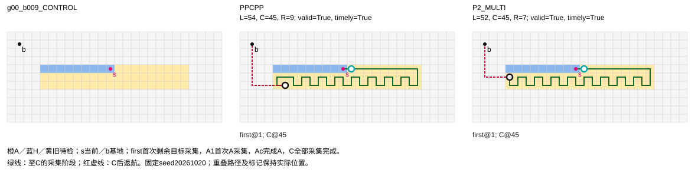
g00_b009_H_SIDE_annotated.svg
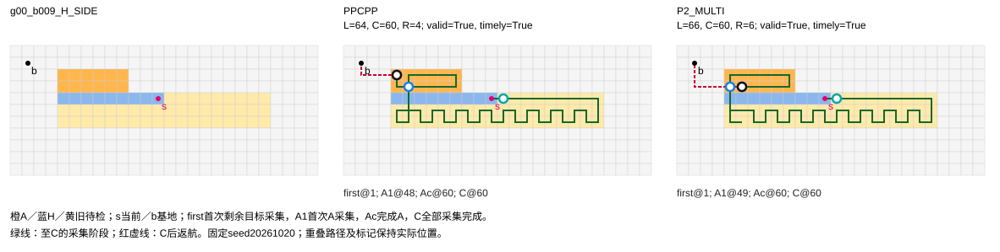
g00_b009_MIXED_SIDE_annotated.svg
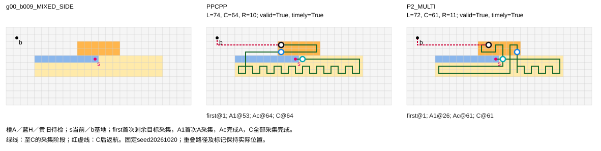
g00_b009_U_SIDE_annotated.svg
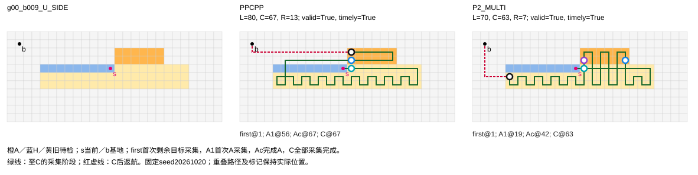
g01_b009_CONTROL_annotated.svg
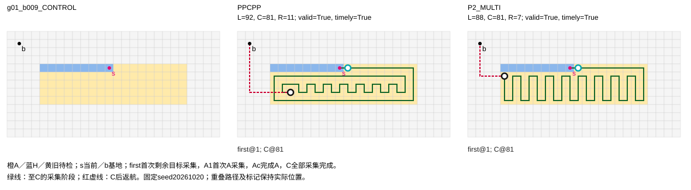
g01_b009_H_SIDE_annotated.svg
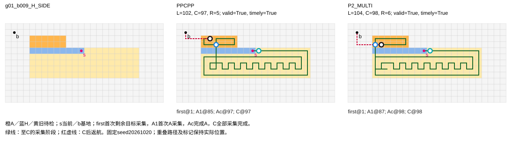
g01_b009_MIXED_SIDE_annotated.svg
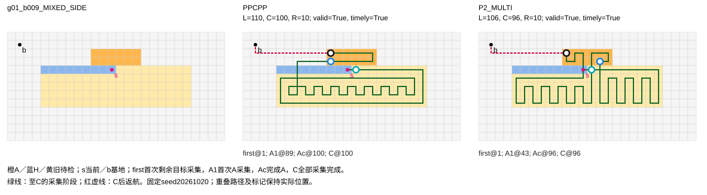
g01_b009_U_SIDE_annotated.svg
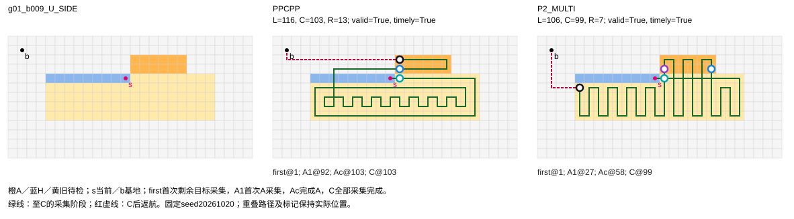
g04_b028_CONTROL_annotated.svg
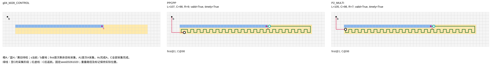
g04_b028_H_SIDE_annotated.svg
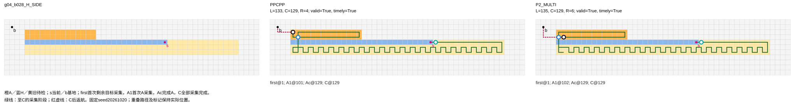
g04_b028_MIXED_SIDE_annotated.svg
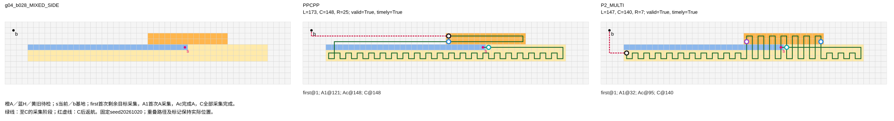
g04_b028_U_SIDE_annotated.svg
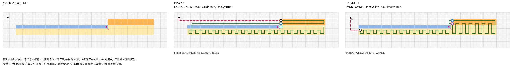